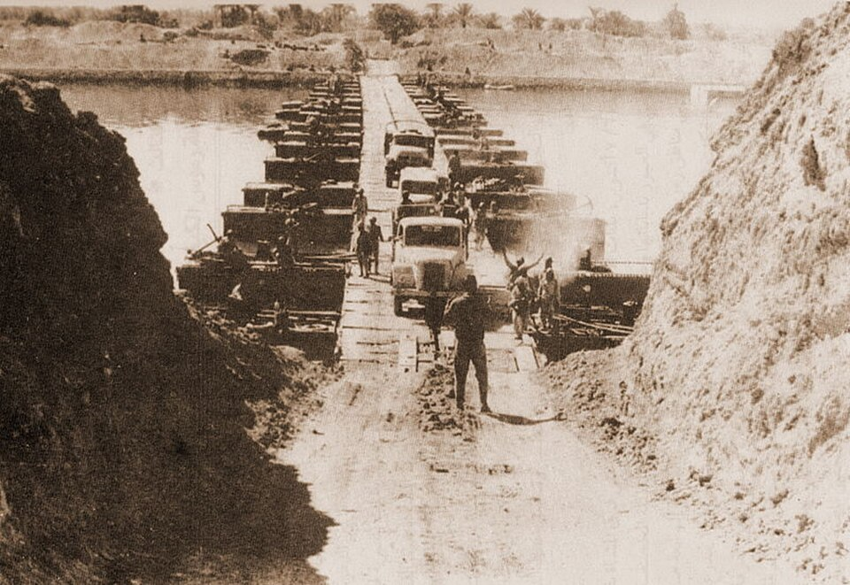

Printable Workbook
Conflict in the Middle East, 1945–1995

Key Topic 3: Attempts at a solution, 1974–1995
Cover Image: Israeli Prime Minister Yitzhak Rabin and PLO Chairman Yasser Arafat shake hands, flanked by US President Bill Clinton, at the signing of the Oslo I Accord, 13 September 1993. (Source: Wikipedia/Public Domain)
Unit Overview
| Key Enquiry Focus |
Hinge Questions (Self-Assessment) |
| KT3.1: Diplomatic negotiations, 1974–1979 |
- Why did the United States suddenly have a powerful financial incentive to broker peace after 1973?
- What specific strategic concessions did Israel make in the Sinai II Agreement?
- What were the two distinct framework agreements produced during the 13 days of seclusion at Camp David?
|
| KT3.2: The Palestinian Issue, 1974–1993 |
- Why did Arafat bring both a gun and an olive branch to the UN General Assembly?
- Why did Ariel Sharon use the attempted assassination of Shlomo Argov as a pretext to invade Lebanon?
- How did the First Intifada differ fundamentally from previous PLO military operations?
|
| KT3.3: Attempts at a solution, 1988–1995 |
- Why did Arafat explicitly renounce terrorism at the UN in Geneva?
- How did the collapse of the Soviet Union force both the PLO and Israel into negotiations?
- What were the three main territorial divisions established by the Oslo II Accords?
|
Name:
Class:
KT3.1: Diplomatic negotiations, 1974–1979
Enquiry: How did historic enemies Egypt and Israel finally achieve a lasting peace treaty?
By the end of this lesson, I can:
Explain the significance of Sadat's historic 1977 visit to Jerusalem.
Describe the roles of Sadat, Begin, and Jimmy Carter at Camp David.
Analyze the terms of the 1979 Peace Treaty and why it angered the wider Arab world.
Do Now Activity
1. Who succeeded Gamal Abdel Nasser as President of Egypt following his death in September 1970?
2. On which major Jewish holy day did Egypt and Syria launch their coordinated surprise attack in October 1973?
3. What was the name of the massive sand-wall fortification built by Israel along the east bank of the Suez Canal that Egyptian forces successfully overran?
4. Which global organisation, dominated by Arab oil-producing countries, implemented the 'oil weapon' in October 1973 to pressure Western nations?
5. What was the static, attrition-based conflict along the Suez Canal from 1969 to 1970 called, and which superpower provided Egypt with 15,000 advisors and SAM-3 missiles during it?
6. Why did Anwar Sadat make the dramatic decision to expel 15,000 Soviet military advisors from Egypt in July 1972?
7. Explain how the US military airlift, known as Operation Nickel Grass, influenced the course of the Yom Kippur War.
8. What were the two primary targets of Egypt's maritime blockade established in the years immediately following the 1949 armistice?
9. Explain the two key economic effects of the OPEC 'oil weapon' on Western nations supporting Israel in late 1973.
10. Write an analytical sentence linking the outcome of the Yom Kippur War to the emergence of diplomatic negotiations in the mid-1970s.
The Yom Kippur War of October 1973 was a military conflict that triggered a global economic and geopolitical revolution. Alarmed by the massive US arms airlift to Israel (Operation Nickel Grass), the Arab members of OPEC (Organization of the Petroleum Exporting Countries) enacted the "Oil Weapon." They placed a total oil embargo on the United States, Denmark, and the Netherlands, while cutting production for other Western nations by 25%. This move had a devastating, cascading impact on the global economy. The price of crude oil quadrupled in a matter of months, skyrocketing from $3 to $12 a barrel. Western industrial nations, highly dependent on cheap oil, plunged into a deep economic crisis characterized by soaring inflation (rising prices) and high unemployment. As oil prices rose, production costs increased, making goods more expensive; consequently, consumers bought fewer items, leading to factory bankruptcies and mass layoffs.
For the superpowers, the crisis changed the calculation of Middle Eastern diplomacy. The Yom Kippur War had brought the United States and the Soviet Union to the brink of a nuclear confrontation. The United States, badly hit by the embargo, now had a powerful financial incentive to broker a lasting peace between Israel and its Arab neighbors to ensure the stable flow of Middle Eastern oil. Furthermore, US policymakers wanted to use diplomatic negotiations to pull Egypt out of the Soviet sphere of influence. Because Egypt and Syria refused to meet face-to-face with Israeli officials, US Secretary of State Henry Kissinger stepped in as a mediator. Kissinger pioneered a form of negotiation known as "shuttle diplomacy," flying back and forth between Cairo, Damascus, and Tel Aviv for two months to relay messages, draft proposals, and bridge the deep psychological divide between the hostile states.
Q1. How did the 1973 Yom Kippur War change the diplomatic calculations of the United States?
Kissinger’s efforts produced three highly important interim agreements. The Sinai I Agreement (January 1974) saw Israeli forces pull back from the west bank of the Suez Canal, creating a UN-patrolled buffer zone. The Golan Accord (May 1974) brokered a cease-fire line on the Golan Heights, with Israel withdrawing from Quneitra. The Sinai II Agreement (September 1975) saw Israel surrender the strategic Gidi and Mitla passes and the vital Abu Rudeis oil fields to Egypt. Crucially, the US established manned early-warning electronic monitoring stations in Sinai to guarantee compliance. A direct consequence of Kissinger's Sinai I agreement was the clearing of the Suez Canal. The canal had been blocked since the 1967 Six Day War by sunken ships and landmines. On 5 June 1975—exactly eight years to the day after its closure—President Anwar Sadat officially reopened the Suez Canal to international trade, providing a major boost to the Egyptian economy.
Q2. What was the result of Henry Kissinger's Sinai II Agreement (September 1975)?
By 1977, the momentum of Kissinger’s shuttle diplomacy had stalled. In May 1977, the right-wing Likud bloc came to power in Israel, with Menachem Begin installed as Prime Minister. Begin firmly believed in Israel’s biblical claim to the entire Land of Israel, including the West Bank. Most observers assumed Begin's election would end all hopes of peace.

However, Anwar Sadat was facing severe internal pressures, a failing economy, and food riots in Cairo. Sadat realized only a dramatic, direct gesture could break the diplomatic deadlock. On 19 November 1977, Sadat’s presidential plane landed at Ben Gurion Airport in Israel. The following day, he addressed the Israeli Knesset, offering Israel complete recognition and permanent peace in exchange for complete Israeli withdrawal from all occupied Arab lands. By mid-1978, direct talks between Egypt and Israel had once again broken down over Begin’s refusal to dismantle Jewish settlements in the Sinai. To rescue the process, US President Jimmy Carter took a massive political risk, inviting both Sadat and Begin to the presidential retreat at Camp David, Maryland, for face-to-face negotiations.
Q3. What dramatic gesture did Anwar Sadat make on 19 November 1977 to break the diplomatic deadlock?

For 13 days, Carter acted as a tireless mediator. The grueling summit resulted in the signing of the Camp David Accords on 17 September 1978. Framework 1 addressed the wider Palestinian issue, agreeing to a five-year transitional period of autonomy for the West Bank and Gaza Strip. Framework 2 outlined a bilateral peace treaty: Israel agreed to a phased, complete withdrawal from the Sinai Peninsula, and Egypt agreed to normalise relations. On 26 March 1979, Begin, Sadat, and Carter signed the formal Treaty of Peace between Egypt and Israel (the Treaty of Washington). Israel returned the entire Sinai Peninsula to Egypt, which became demilitarised. In return, Egypt officially recognized Israel’s right to exist, becoming the first Arab nation to do so. The Suez Canal and the Straits of Tiran were permanently open to Israeli maritime shipping.
Q4. Outline the key terms of Framework 2 of the 1978 Camp David Accords.
While celebrated in the West, the peace treaty triggered a massive geopolitical backlash in the Middle East. The Arab League expelled Egypt for abandoning the Palestinian cause. Tragically, on 6 October 1981, Anwar Sadat was assassinated by radical Islamic militants within the Egyptian army who opposed his peace with Israel. Begin also faced furious opposition from hardline settlers, but the Knesset approved the treaty with a massive majority of 84 votes to 19.
Q5. What was the tragic personal consequence for Anwar Sadat following the signing of the peace treaty?
Q6. Explain one consequence of the 1973 Oil Crisis for diplomatic negotiations in the Middle East. (4 marks)
Reference Image: The Yom Kippur War (1973)

Egyptian forces launching Operation Badr, successfully crossing the Suez Canal and breaching the Bar Lev Line on 6 October 1973.
Reference Image: The Camp David Accords (1978)

Egyptian President Anwar Sadat, US President Jimmy Carter, and Israeli Prime Minister Menachem Begin shaking hands after agreeing to the Camp David framework.
Revision Timeline
KT3.1: Diplomatic negotiations, 1974–1979
Map out the key events chronologically. Read the title and prompt to guide your summary.
Kissinger's Shuttle Diplomacy
How did the US mediate post-war disengagement?
Sadat's Visit to Jerusalem
Why was this a historic breakthrough?
The Camp David Accords
What framework for peace was agreed upon?
The Egypt-Israel Peace Treaty
What did each side gain from the 1979 treaty?
Assassination of Sadat
Why was Sadat assassinated by Islamic extremists?
KT3.2: The Palestinian Issue, 1974–1993
Enquiry: How did the First Intifada change the nature of the Palestinian struggle?
By the end of this lesson, I can:
Explain why Israel invaded Lebanon in 1982 to expel the PLO.
Describe the causes and grassroots nature of the First Intifada.
Analyze how the Intifada challenged Israeli security and forced the PLO to change its diplomatic stance.
Do Now Activity
1. Who was the US Secretary of State who pioneered the stage-by-step mediation strategy known as 'shuttle diplomacy' following the 1973 Yom Kippur War?
2. In what month and year did Egypt officially reopen the Suez Canal to international shipping, exactly eight years to the day after its closure?
3. Explain how the 1973 Oil Crisis acted as a direct catalyst for the United States to become heavily involved in Middle Eastern diplomacy.
4. Which right-wing, revisionist Zionist leader won the May 1977 Israeli election, ending nearly thirty years of Labor Party dominance?
5. Explain how Anwar Sadat’s historic visit to Jerusalem in November 1977 broke a decades-long Arab diplomatic taboo.
6. Name the two distinct framework agreements that comprised the Camp David Accords signed on 17 September 1978.
7. Detail the primary bilateral terms of the Treaty of Washington signed on 26 March 1979.
8. How did the wider Arab world react to Egypt signing a separate peace treaty with Israel in 1979?
9. Explain the domestic backlash and political fallout that both Anwar Sadat and Menachem Begin faced within their own countries after signing the peace agreements.
10. Using a relative clause and an analytical linking phrase, write a single sentence showing how the 1973 Oil Crisis historically connected to the Treaty of Washington (1979).
Following the 1973 Yom Kippur War, the Palestine Liberation Organisation (PLO) sought to capitalize on the shifting geopolitical landscape to advance its diplomatic standing. On 13 November 1974, PLO Chairman Yasser Arafat made a historic address to the United Nations General Assembly in New York. This invitation was highly significant, representing the first time a representative of a non-state national movement was permitted to address the UN General Assembly plenary. Arafat, who delivered his speech wearing his signature checkered keffiyeh and olive-green uniform, famously concluded his remarks with a powerful metaphorical warning: "I have come bearing an olive branch and a freedom fighter's gun. Do not let the olive branch fall from my hand."

This dual-track message signaled that while the PLO was prepared to engage in international diplomacy to secure a sovereign Palestinian state, it would not abandon its armed struggle if diplomatic avenues were blocked. The diplomatic offensive yielded immediate results at the UN. Resolution 3236 formally recognized the inalienable rights of the Palestinian people to self-determination, and granted the PLO permanent Observer Status. At the Arab League Summit in Algiers, the PLO was officially recognized as the "sole legitimate representative of the Palestinian nation." Following its bloody expulsion from Jordan during the "Black September" civil war of 1970, the PLO relocated its central leadership, military apparatus, and thousands of fighters to Lebanon. Lebanon was an ideal haven: its central government in Beirut was weak, and the country already hosted over 400,000 Palestinian refugees living in camps.
Q1. What was the significance of UN Resolution 3236 (November 1974) for the PLO?

By the mid-1970s, the PLO had established a powerful "state-within-a-state" in southern Lebanon, widely known as "Fatahland". The PLO operated its own checkpoints, collected taxes, ran hospitals, and established military training camps. From these bases, PLO guerrilla fighters launched cross-border raids and fired Katyusha rocket barrages into northern Israel, terrorizing the civilian settlements of the Galilee region. On 11 March 1978, a Fatah commando unit launched the Coastal Road Massacre, hijacking a civilian bus and engaging in a gun battle that resulted in the deaths of 37 Israeli civilians. In direct retaliation, Prime Minister Menachem Begin ordered the IDF to launch Operation Litani on 15 March 1978.
Q2. What was 'Fatahland' and how did it threaten Israeli security?

Over 26,000 IDF troops invaded southern Lebanon, occupying a 10-kilometer-wide security strip. The UN established the United Nations Interim Force in Lebanon (UNIFIL) to confirm the Israeli withdrawal. Israel withdrew but left control of the buffer zone to a friendly, pro-Israeli Christian militia known as the South Lebanon Army (SLA). The UNIFIL buffer failed to stop the conflict. The final trigger for full-scale war occurred on 3 June 1982, when the Abu Nidal Organization shot and critically wounded Shlomo Argov, Israel’s ambassador to Great Britain. Although British intelligence confirmed the PLO was not responsible, Israeli Defense Minister Ariel Sharon used the assassination attempt as the necessary pretext to launch a long-planned, total invasion of Lebanon: Operation Peace for Galilee.
Q3. What pretext did Israeli Defense Minister Ariel Sharon use to launch Operation Peace for Galilee in June 1982?
On 6 June 1982, Israeli forces launched a massive armored invasion. Ariel Sharon secretly harbored much larger geopolitical ambitions: to completely destroy the PLO in Lebanon, defeat Syrian forces, and install a pro-Israeli Christian government in Beirut led by Maronite leader Bashir Gemayel. By mid-June, Israeli forces surrounded Lebanon's capital, trapping Yasser Arafat and 15,000 PLO fighters in West Beirut. For over two months, Israel subjected the city to relentless bombardments. To prevent total destruction, a multinational peacekeeping force supervised the evacuation of Yasser Arafat and over 14,000 fighters by ship to Tunis, Tunisia.
Q4. What were Ariel Sharon’s larger geopolitical ambitions behind the 1982 invasion of Lebanon?
Having successfully expelled the PLO, Israel's close Maronite ally, Bashir Gemayel, was elected President of Lebanon. However, on 14 September 1982, Gemayel was assassinated in a massive bomb blast by Syrian agents.
In response to the assassination, the IDF occupied West Beirut. On 16 September 1982, Israeli forces surrounded the Palestinian refugee camps of Sabra and Shatila. Claiming PLO terrorists remained inside, Ariel Sharon authorized the Lebanese Christian Phalangist militias to enter the camps to clear them. Fueled by anger over the death of Gemayel, the Phalangists systematically slaughtered unarmed civilians. While the IDF held the perimeter and illuminated the night skies with flares, the militias murdered between 800 and 3,500 people. The revelation of the atrocities triggered immediate, furious international condemnation. The extraparliamentary peace movement "Peace Now" organized a protest of 400,000 Israelis in Tel Aviv. The Kahan Commission concluded that Defense Minister Ariel Sharon bore "personal, indirect responsibility" for the tragedy. He was forced to resign.
Q5. Describe the events and consequences of the Sabra and Shatila massacre in September 1982.

While the PLO leadership remained isolated in Tunis, the core of the Palestinian struggle shifted back to the occupied territories. On 8 December 1987, an Israeli military truck collided with a civilian car, killing four Palestinians. The local population erupted in massive demonstrations that swept across Gaza and the West Bank, marking the start of the First Palestinian Intifada ("The Shaking Off").
Q6. What event marked the start of the First Palestinian Intifada in December 1987?
Unlike the PLO operations, the First Intifada was a grassroots, popular civilian uprising utilizing non-violent civil disobedience (strikes, boycotts) alongside low-level street violence. The iconic visual of the Intifada consisted of Palestinian youth throwing stones at heavily armored Israeli tanks. Israeli Defense Minister Yitzhak Rabin responded with a severe "Iron Fist" policy, ordering the IDF to "break the bones" of demonstrators. However, television cameras broadcasted graphic footage of heavily armed soldiers beating stone-throwing children across the globe. For the first time, global public sympathy shifted decisively toward the Palestinian cause, severely damaging Israel’s international moral standing.
Q7. How did the First Intifada shift global public sympathy toward the Palestinian cause?
CONSEQUENCES OF THE FIRST INTIFADA
| For the PLO |
For Israel |
The Rise of Hamas |
| Forced Yasser Arafat to renounce terrorism and officially accept the two-state solution (1988) to retain leadership. |
Convinced Yitzhak Rabin and military planners that there was no purely military solution to the Palestinian issue. |
Formed in 1987 as a rival to the PLO, Hamas rejected compromises and conducted violent armed attacks against Israelis. |
Writing Historically: Level 9 Stylistic Masterclass
GCSE history examiners actively look for clear, sophisticated written expression that demonstrates analytical links between historical causes, events, and consequences.
- 1. Using Relative Clauses to Pack in Evidence (AO1): Add vital historical information directly to a noun using relative pronouns like 'who', 'which', or 'whose'. For example: Yasser Arafat, who addressed the UN General Assembly in 1974 wearing his signature keffiyeh and military uniform, successfully secured international legitimacy...
- 2. Using Noun Phrases in Apposition (AO1): Place two noun phrases side-by-side to provide concise historical detail. For example: Ariel Sharon, the hardline Israeli Defense Minister, launched Operation Peace for Galilee in June 1982.
- 3. Using Present Participles (AO2): Link cause and effect using verbs ending in '-ing'. For example: ...Palestinian guerrillas launched frequent cross-border attacks, provoking disproportionate Israeli military reprisals.
Q8. Write a narrative account analysing the key developments of the PLO in Lebanon in the years 1970–82. (8 marks)
Reference Image: The First Intifada (1987)

A Palestinian youth throwing a stone at an Israeli tank during the First Intifada, highlighting the asymmetric nature of the conflict.
Revision Timeline
KT3.2: The Palestinian Issue, 1974–1993
Map out the key events chronologically. Read the title and prompt to guide your summary.
Arafat's UN Address
What was the significance of the 'olive branch and freedom fighter's gun' speech?
PLO Moves to Lebanon
Why did southern Lebanon become known as 'Fatahland'?
Israeli Invasion of Lebanon
What were the objectives of Operation Peace for Galilee?
Sabra and Shatila Massacre
What happened, and what was the international reaction?
Outbreak of the First Intifada
What sparked the 1987 Palestinian uprising?
KT3.3: Attempts at a solution, 1988–1995
Enquiry: Why did the Oslo Accords bring hope for peace, yet fail to end the conflict?
By the end of this lesson, I can:
Explain why both Israel and the PLO were finally willing to secretly negotiate.
Describe the key agreements of the Oslo Accords (mutual recognition and the creation of the Palestinian Authority).
Analyze the violent opposition from extremists on both sides, culminating in the assassination of Yitzhak Rabin.
Do Now Activity
1. What was the famous metaphor Yasser Arafat used in his historic 1974 address to the United Nations General Assembly?
2. What major diplomatic status did the UN General Assembly award the PLO under Resolution 3236 following Arafat's speech?
3. Why did the PLO choose to relocate its central headquarters and fighters to Lebanon after being expelled from Jordan in 1970–71?
4. What was 'Fatahland,' and how did its existence affect northern Israeli security?
5. Explain the short-term trigger that Ariel Sharon used as a pretext to launch the June 1982 invasion of Lebanon.
6. Following the Siege of Beirut in August 1982, where were Yasser Arafat and the PLO leadership evacuated to under international supervision?
7. Why did the Israeli Kahan Commission (1983) find Defense Minister Ariel Sharon 'indirectly responsible' for the Sabra and Shatila massacre?
8. What spontaneous event in December 1987 served as the immediate catalyst for the outbreak of the First Palestinian Intifada?
9. Describe the civilian tactics of the First Intifada and explain why Yitzhak Rabin's military response backfired internationally.
10. Write an analytical sentence linking the First Palestinian Intifada to the emergence of Hamas.
By late 1988, PLO Chairman Yasser Arafat realized that the political landscape was shifting beneath his feet. The First Palestinian Intifada had been launched and coordinated by grassroots local committees on the ground, bypassing the traditional PLO leadership isolated in Tunis. Arafat faced a major dilemma: his leadership was being rapidly overshadowed by new, highly popular underground leaders in the Unified National Leadership of the Uprising (UNLU) and radical Islamist groups like Hamas and Islamic Jihad.
To regain political control, Arafat enacted a historic shift in PLO strategy. In November 1988, the Palestinian National Council officially accepted the principles of partition and a two-state solution—officially recognizing Israel’s right to exist alongside a sovereign, independent Palestinian state in the occupied territories. In December 1988, on the strict insistence of the United States, Arafat delivered a historic speech to a special session of the UN General Assembly in Geneva. In this speech, Arafat explicitly renounced and condemned all forms of terrorism. This met the long-standing US conditions for official diplomatic contact, forcing the Reagan administration to open formal diplomatic talks with the PLO.
Q1. How did Yasser Arafat enact a historic shift in PLO strategy in late 1988?
The international geopolitical order was completely transformed between 1989 and 1991. The dissolution of the Soviet Union (USSR) in December 1991 brought an end to the Cold War and fundamentally altered the balance of power in the Middle East.

The collapse of the USSR was a devastating blow to the PLO, which lost its primary funding and diplomatic backing. Over 200,000 Soviet Jews migrated to Israel, leading to the expansion of Jewish settlements in the West Bank and displacing Palestinian workers. Arafat realized he had to secure a deal immediately. The end of the Cold War also meant the US emerged as the sole global superpower and used its leverage, threatening to withhold a $10 billion loan guarantee, to force Israel's Prime Minister Yitzhak Shamir to negotiate. In August 1990, Iraqi dictator Saddam Hussein invaded Kuwait, triggering the 1991 Gulf War. Arafat made the disastrous decision to publicly support Saddam Hussein.
Q2. How did the collapse of the Soviet Union in 1991 severely damage the PLO's geopolitical position?
Outraged by Arafat's betrayal, wealthy Gulf Arab states cut off all financial donations. Kuwait expelled over 300,000 Palestinian workers. The PLO was left bankrupt. To stabilize the region, the US and USSR co-sponsored the Madrid Peace Conference in November 1991. While the public talks stalemated, they broke the taboo of direct negotiations. In June 1992, the moderate Labor Party came to power in Israel under Yitzhak Rabin. Rabin authorized secret, back-channel negotiations in Oslo, Norway.
Q3. Why was the PLO left bankrupt and diplomatically isolated following the 1991 Gulf War?

The urgency intensified in April 1993 when Hamas launched its first suicide car bombing. This convinced Rabin that Arafat’s PLO was a moderate alternative. The secret negotiations produced the historic Oslo I Accords, signed on the White House lawn on 13 September 1993. Arafat renounced terrorism and recognized Israel, while Rabin recognized the PLO. An interim Palestinian National Authority (PNA) was established to govern Gaza and Jericho. In October 1994, Israel and Jordan signed a formal Treaty of Peace. King Hussein approached Rabin because Jordan was suffering economically after the Gulf War. US President Bill Clinton promised to cancel Jordan's massive debts if it normalized relations.
Q4. What convinced Israeli Prime Minister Yitzhak Rabin to engage in secret negotiations with the PLO in 1993?
On 28 September 1995, Rabin and Arafat signed the Oslo II Accords, which detailed the expansion of Palestinian self-rule across the West Bank by dividing it into three zones.
While Oslo II was celebrated, the division triggered a massive political backlash. Palestinians were frustrated that the PNA only controlled a fragmented archipelago (Area A), while Israel still controlled 70% of their land (Area C). Hamas launched suicide bus bombings. Right-wing Israelis were outraged by Rabin's concessions.
Q5. Why did the Oslo II Accords trigger a massive political backlash among Palestinians?

On 4 November 1995, Yitzhak Rabin was assassinated at a peace rally in Tel Aviv by Yigal Amir, a radical right-wing Jewish law student. The assassination dealt a fatal blow to the peace process, leaving the "permanent status" issues completely unresolved.
Q6. What event dealt a fatal blow to the peace process on 4 November 1995?
Q7. Write a narrative account analysing the key developments in the peace process between Israel and the Palestinians in the years 1988–95. (8 marks)
The tragic assassination of Rabin highlighted the deep structural flaws of the Oslo Accords. While celebrated internationally as a breakthrough, the agreement was fundamentally ambiguous. It intentionally delayed the most difficult "permanent status" issues—such as the final borders, the status of Jerusalem, the right of return for Palestinian refugees, and the dismantling of Israeli settlements—to a later date. This delay created a dangerous vacuum of uncertainty. Right-wing Israelis viewed any land concessions as a threat to national security and biblical claims, while Palestinian hardliners argued that the PNA had essentially become a subcontractor for Israeli security, failing to deliver true sovereignty or halt settlement expansion. Ultimately, the Accords required a high level of mutual trust that simply did not exist on the ground.
Q8. Explain why the Oslo Accords were considered 'fundamentally ambiguous' and structurally flawed.
Revision Timeline
KT3.3: Attempts at a solution, 1988–1995
Map out the key events chronologically. Read the title and prompt to guide your summary.
PLO Recognizes Israel
What shift occurred in Arafat's policy in 1988?
The Gulf War
How did the PLO's support for Saddam Hussein affect its standing?
The Madrid Conference
Why was this conference a diplomatic milestone?
The Oslo Accords
What self-rule was granted to the Palestinians?
Assassination of Yitzhak Rabin
How did this tragic event impact the peace process?
Exam Practice Zone
Exam Block 5 (Key Topics 3.1 & 3.2)
Q1. Explain the importance of the oil crisis (1973–74) for diplomatic negotiations in the Middle East. (8 marks)
Q2. Explain the importance of Henry Kissinger's 'shuttle diplomacy' (1974–75) for negotiations between Arab states and Israel. (8 marks)
Q3. Explain the importance of the Israeli invasion of Lebanon (1982) for the Palestine Liberation Organisation (PLO). (8 marks)
Q4. Explain one consequence of the 1973–74 Oil Crisis for diplomatic negotiations in the Middle East. (4 marks)
Q5. Explain one consequence of President Sadat of Egypt’s visit to Israel (1977). (4 marks)
Q6. Explain one consequence of the relocation of the PLO headquarters to Lebanon after 1970. (4 marks)
Q7. Explain one consequence of the First Palestinian Intifada (1987–93) for Yasser Arafat's PLO. (4 marks)
Q8. Write a narrative account analysing the key developments in negotiations between Israel and Egypt in the years 1973–79. (8 marks)
You may use the following in your answer:
- Henry Kissinger's 'shuttle diplomacy' (1974–75)
- The Camp David Accords (1978)
You must also use information of your own.
Q9. Write a narrative account analysing the key developments of the PLO in Lebanon in the years 1970–82. (8 marks)
You may use the following in your answer:
- The expulsion of the PLO from Jordan (1970)
- Israel's 'Operation Peace for Galilee' (1982)
You must also use information of your own.
Exam Block 6 (Key Topics 3.2 & 3.3)
Q1. Explain the importance of PLO activities in Lebanon in the years 1970–82 for Israeli security. (8 marks)
Q2. Explain the importance of Yasser Arafat's renunciation of terrorism (1988) for attempts to find a solution to the conflict. (8 marks)
Q3. Explain the importance of the Oslo Accords (1993) for attempts to find a solution to the Palestinian issue. (8 marks)
Q4. Explain one consequence of Yasser Arafat’s address to the UN in Geneva (1988). (4 marks)
Q5. Explain one consequence of the Oslo I Accords (1993). (4 marks)
Q6. Write a narrative account analysing the key developments in negotiations between Israel and the Palestinians in the years 1987–95. (8 marks)
You may use the following in your answer:
- The First Palestinian Intifada (1987–93)
- The Oslo I Accords (1993)
You must also use information of your own.